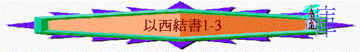

|
真 知 道 祂 |
|||
|
先知的看見(1-3) |
選民的醒覺(4-24) |
列邦的發現(25-39) |
餘民的盼望(40-48) |
|
祂是滿有榮耀權能的神 |
祂是成就怒中所定的神 |
祂是耶和華以色列的神 |
祂是復臨選民中間的神 |
一.先知的看見(1-3)----祂是滿有榮耀權能的神
~時 間:猶大滅亡前，約雅斤王被擄去第五年四月初五
~主要對象:祭司以西結(當時可能30歲)
~特 點:很多「觀看」、「形像」、「彷彿」等字眼
~啟 發:作為一個被擄的先知，在事奉起步時，已被擄，失去了事奉的地方—聖殿，似乎又看不見神的榮耀，也不清楚前面的方向，他會有甚麼感受? 他可怎樣事奉神?
★一個事奉者在事奉之先最需要甚麼?
1.看見神僕役的樣式(1:1-25)
a.四活物的樣式
~四活物是甚麼?(10:1、28:4)
i.光明燦爛
~找不到黑暗
「我觀看，見狂風從北方颳來，隨著有一朵包括閃爍火的大雲，周圍有光輝；從其中的火內發出好像光耀的精金。」1:4
「各有四個臉面，四個翅膀。」1:6
「至於四活物的形像，就如燒著火炭的形狀，又如火把的形狀。火在四活物中間上去下來，這火有光輝，從火中發出閃電。」1:13
ii.榮耀美麗
「我觀看，見狂風從北方颳來，隨著有一朵包括閃爍火的大雲，周圍有光輝；從其中的火內發出好像光耀的精金。」1:4
iii.直往前奔
「翅膀彼此相接，行走並不轉身，俱各直往前行。」1:9
「這活物往來奔走，好像電光一閃。」1:14
iv.多重身份
「至於臉的形像：前面各有人的臉，右面各有獅子的臉，左面各有牛的臉，後面各有鷹的臉。」1:10
(1)人的臉--------代表人性
(2)獅子的臉------代表威榮(王)
(3)牛的臉--------代表僕人
(4)鷹的臉--------代表屬天
~似四福音中的耶穌基督
v.彼此交接
「各展開上邊的兩個翅膀相接，各以下邊的兩個翅膀遮體。」1:11
vi.敬虔侍立
「各展開上邊的兩個翅膀相接，各以下邊的兩個翅膀遮體。」1:11
「活物行走的時候，我聽見翅膀的響聲，像大水的聲音，像全能者的聲音，也像軍隊鬨嚷的聲音。活物站住的時候，便將翅膀垂下。」1:24
vii.順服帶領
「他們俱各直往前行。靈往那裡去，他們就往那裡去，行走並不轉身。」1:12
b.活物旁的車輪
「我正觀看活物的時候，見活物的臉旁各有一輪在地上。輪的形狀和顏色（原文作作法）好像水蒼玉。四輪都是一個樣式，形狀和作法好像輪中套輪。」1:15-16
「靈往那裡去，活物就往那裡去；活物上升，輪也在活物旁邊上升，因為活物的靈在輪中。」1:20
~活物的靈在輪中，大家都是相同樣式、同樣;
i.心靈事奉
ii.身靈一致
「那些行走，這些也行走；那些站住，這些也站住；那些從地上升，輪也在旁邊上升，
因為活物的靈在輪中。」1:21
iii.共同順服
iv.更深看見
「至於輪輞，高而可畏；四個輪輞周圍滿有眼睛。」1:18
v.無窮無盡
「輪的形狀和顏色（原文作作法）好像水蒼玉。四輪都是一個樣式，形狀和作法好像輪中套輪。」1:16
2.看見神榮耀的形像(1:26-28)
a.至高無尚
「在他們頭以上的穹蒼之上有聲音。他們站住的時候，便將翅膀垂下。在他們頭以上的穹蒼之上有寶座的形像，彷彿藍寶石；在寶座形像以上有彷彿人的形狀。」1:25-26
「至於輪輞，高而可畏；四個輪輞周圍滿有眼睛。」1:18
~四活物旁的的車輪輞尚且高，在他們之上的穹蒼更無可比，在穹蒼之上的主則….
b.榮耀無比
「我見從他腰以上有彷彿光耀的精金，周圍都有火的形狀，又見從他腰以下有彷彿火的形狀，周圍也有光輝。下雨的日子，雲中虹的形狀怎樣，周圍光輝的形狀也是怎樣。這就是耶和華榮耀的形像。我一看見就俯伏在地，又聽見一位說話的聲音。」1:27-28
c.權能超然
i.從四活物中看出
「在他們頭以上的穹蒼之上有聲音。他們站住的時候，便將翅膀垂下。」1:25
ii.從寶座中看出
「在他們頭以上的穹蒼之上有寶座的形像，彷彿藍寶石；在寶座形像以上有彷彿人的
形狀。」1:26
iii.從祂的話語中看出
「他對我說：「人子啊，你站起來，我要和你說話。」2:1
vi.從以西結反應中看出
「下雨的日子，雲中虹的形狀怎樣，周圍光輝的形狀也是怎樣。這就是耶和華榮耀的形像。我一看見就俯伏在地，又聽見一位說話的聲音。」1:28
「於是我起來往平原去，不料，耶和華的榮耀正如我在迦巴魯河邊所見的一樣，停在那裡，我就俯伏於地。」3:23
d.卻有人形
「在他們頭以上的穹蒼之上有寶座的形像，彷彿藍寶石；在寶座形像以上有彷彿人的形
狀。」1:26
「他對我說：「人子啊，你站起來，我要和你說話。」2:1
3.看見神托負的內容(2-3)
a.神托負的本質
i.從神而來------不是從人而來
「他對我說：「人子啊，我差你往悖逆的國民以色列人那裡去。他們是悖逆我的，他們和他們的列祖違背我，直到今日。」2:3
「他對我說：「人子啊，你往以色列家那裡去，將我的話對他們講說。」3:4
ii.由神決定------不是按人意思
(1)事奉的領域
「你奉差遣不是往那說話深奧、言語難懂的民那裡去，乃是往以色列家去。」3:5
(2)事奉的群體
「這眾子面無羞恥，心裡剛硬。我差你往他們那裡去，你要對他們說：主耶和華如此說。」2:4
(3)事奉的結果
「他們或聽，或不聽，（他們是悖逆之家），必知道在他們中間有了先知。」2:5
「以色列家卻不肯聽從你，因為他們不肯聽從我；原來以色列全家是額堅心硬的人。」3:7
iii.有神幫助
(1)神的話
「人子啊，雖有荊棘和蒺藜在你那裡，你又住在蠍子中間，總不要怕他們，也不要怕他們的話；他們雖是悖逆之家，還不要怕他們的話，也不要因他們的臉色驚惶。他們或聽，或不聽，你只管將我的話告訴他們；他們是極其悖逆的。」2:6-7
(2)神的靈
「於是靈將我舉起，帶我而去。我心中甚苦，靈性忿激，並且耶和華的靈（原文作手）在我身上大有能力。」3:14
(3)神自己
「看哪，我使你的臉硬過他們的臉，使你的額硬過他們的額。我使你的額像金鋼鑽，比火石更硬。他們雖是悖逆之家，你不要怕他們，也不要因他們的臉色驚惶。」3:8-9
b.受托者的回應
i.細心的聆聽
「人子啊，要聽我對你所說的話，不要悖逆像那悖逆之家，你要開口吃我所賜給你的。」2:8
「他又對我說：「人子啊，我對你所說的一切話，要心裡領會，耳中聽聞。」3:10
ii.全人的領受
「他又對我說：「人子啊，我對你所說的一切話，要心裡領會，耳中聽聞。」3:10
「他對我說：「人子啊，要吃你所得的，要吃這書卷，好去對以色列家講說。於是我開口，他就使我吃這書卷，又對我說：「人子啊，要吃我所賜給你的這書卷，充滿你的肚腹。」我就吃了，口中覺得其甜如蜜。」3:1-3
iii.勇敢的面對
「人子啊，雖有荊棘和蒺藜在你那裡，你又住在蠍子中間，總不要怕他們，也不要怕他們的話；他們雖是悖逆之家，還不要怕他們的話，也不要因他們的臉色驚惶。」2:6
vi.絕對的順服
~要往…
~要說…
~要聽…
~要吃…
~不要怕…
~要起來
v.完全的放低
「我就來到提勒亞畢，住在迦巴魯河邊被擄的人那裡，到他們所住的地方，在他們中間憂憂悶悶地坐了七日。過了七日，耶和華的話臨到我說。」3:15-16